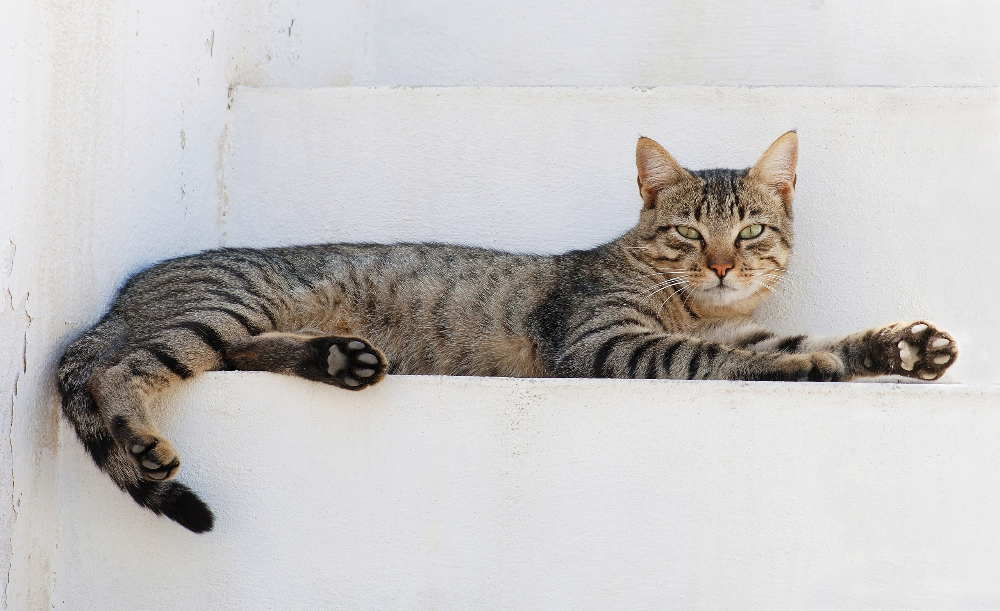
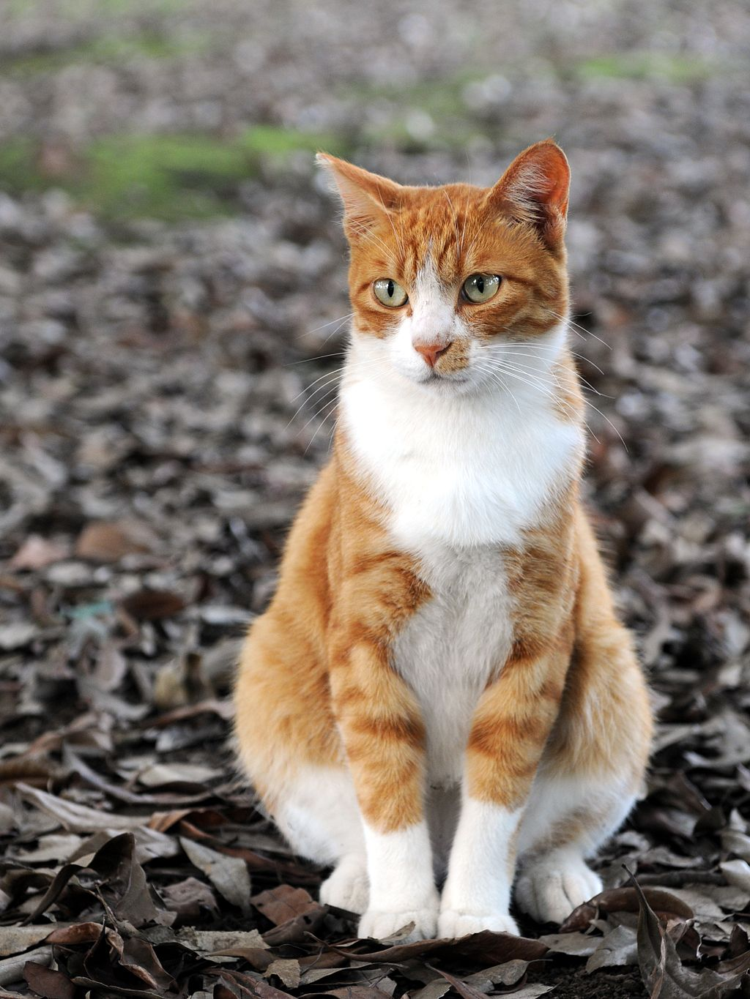

flowchart LR
A[Get a new Cat] --> B(do health examination)
B --> C{Go shoping}
C --> D[Cat food]
C --> E[Cat Teaser]
simple_quarto_website
This is a Quarto website about cat.
To learn more about Quarto websites visit https://quarto.org/docs/websites.
Section 1 Introduction

The cat (Felis catus) is a domestic species of small carnivorous mammal. It is the only domesticated species in the family Felidae and is commonly referred to as the domestic cat or house cat to distinguish it from the wild members of the family. Cats are commonly kept as house pets but can also be farm cats or feral cats; the feral cat ranges freely and avoids human contact. Domestic cats are valued by humans for companionship and their ability to kill vermin. About 60 cat breeds are recognized by various cat registries.1
- Domain: Eukaryota
- Kingdom: Animalia
- Phylum: Chordata
- Class: Mammalia
- Order: Carnivora
- Suborder: Feliformia
- Family: Felidae
- Subfamily: Felinae
- Genus: Felis
Section 2 Origin of Name

The scientific name Felis catus was proposed by Carl Linnaeus in 1758 for a domestic cat. Felis catus domesticus was proposed by Johann Christian Polycarp Erxleben in 1777. Felis daemon proposed by Konstantin Satunin in 1904 was a black cat from the Transcaucasus, later identified as a domestic cat. (see Driscoll?, Carlos A., et al. “The taming of the cat.” Scientific American 300.6 (2009): 68.)
In 2003, the International Commission on Zoological Nomenclature ruled that the domestic cat is a distinct species, namely Felis catus. In 2007, it was considered a subspecies, F. silvestris catus, of the European wildcat (F. silvestris) following results of phylogenetic research. In 2017, the IUCN Cat Classification Taskforce followed the recommendation of the ICZN in regarding the domestic cat as a distinct species, Felis catus.
Section 3 Feature
Size
The domestic cat has a smaller skull and shorter bones than the European wildcat. It averages about 46 cm (18 in) in head-to-body length and 23–25 cm (9–10 in) in height, with about 30 cm (12 in) long tails. Males are larger than females. Adult domestic cats typically weigh between 4 and 5 kg (9 and 11 lb)
Skeleton
Cats have seven cervical vertebrae (as do most mammals); 13 thoracic vertebrae (humans have 12); seven lumbar vertebrae (humans have five); three sacral vertebrae (as do most mammals, but humans have five); and a variable number of caudal vertebrae in the tail (humans have only three to five vestigial caudal vertebrae, fused into an internal coccyx).
Markdown table of the cost of keeping a cat
One-time Expenses in RMB
| Sex | Deworming | Vaccine | Sterilization | Sundries |
|---|---|---|---|---|
| M | 250 | 150 | 300 | 500 |
| F | 250 | 150 | 500 | 600 |
Sundries include cat bag, cat bowl, litter box, cat carrier, nearly \(60+20+80+300=\)¥\(460\) minimum cost.
Monthly expenses list
- Cat food: About 2.5 kg per month, a total of 130 RMB/month.
- Cat litter: about 2 bags per month, buy more concessions, a total of 25 RMB/month.
- Deworming drug: once every three months, the cost is about 150 RMB, which is 50 RMB/month every month.
- Staple food canned food/cat strips/shrimp/chicken breast: eat once a week/two weeks, about 10-20 RMB a time, a total of 50 RMB/month.
- Cat stick/mouse toy: buy once every two months, spread down 15 RMB/month.
- Vaccine: 150 RMB per year, spread to 13 RMB per month.
- Bath: once a year, 60 RMB a time, spread to every month is 10 RMB/month.
Total Cost: \[ 130 + 25 + 50 + 50 + 15 + 13 + 10 = 293 \]
That’s the situation if the cat doesn’t get sick. If it is sick, there will be additional expenses. But if it is not a serious illness, such as ear mites, skin diseases, or minor problems, each cost is within 200 RMB.
Footnotes
Driscoll, C. A.; Clutton-Brock, J.; Kitchener, A. C. & O’Brien, S. J. (2009). “The taming of the cat”. Scientific American. 300 (6): 68–75. Bibcode:2009SciAm.300f..68D. doi:10.1038/scientificamerican0609-68. PMC 5790555. PMID 19485091.↩︎